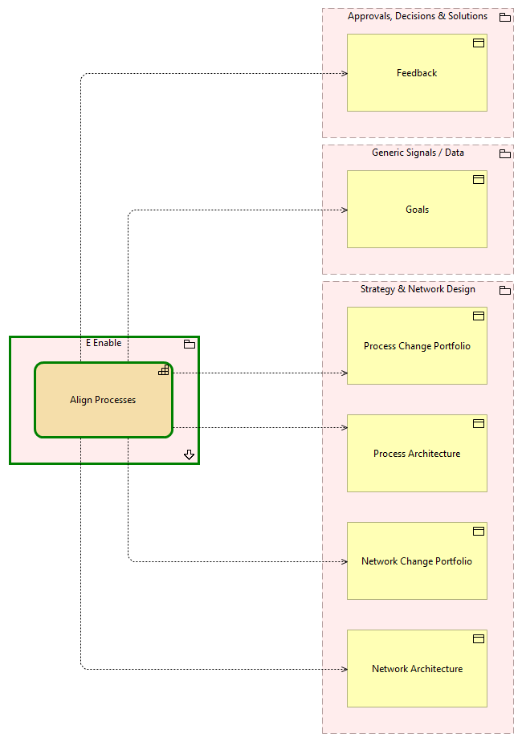

Align Processes - Context
(
)

generated_by
build_archi_xml.py::gen_capability_context_view
generator_path
pedro/capabilities/build_archi_xml_assign/build_archi_xml_assign.py
run_at
2026-10-10T17:55:15
view_type
capability_context
E Enable
Align Processes
E Enable - Processes
Approvals, Decisions & Solutions
Feedback
Generic Signals / Data
Goals
Strategy & Network Design
Network Architecture
Network Change Portfolio
Process Architecture
Process Change Portfolio
Align Processes
Feedback
Align Processes
Goals
Align Processes
Network Architecture
Align Processes
Network Change Portfolio
Align Processes
Process Architecture
Align Processes
Process Change Portfolio